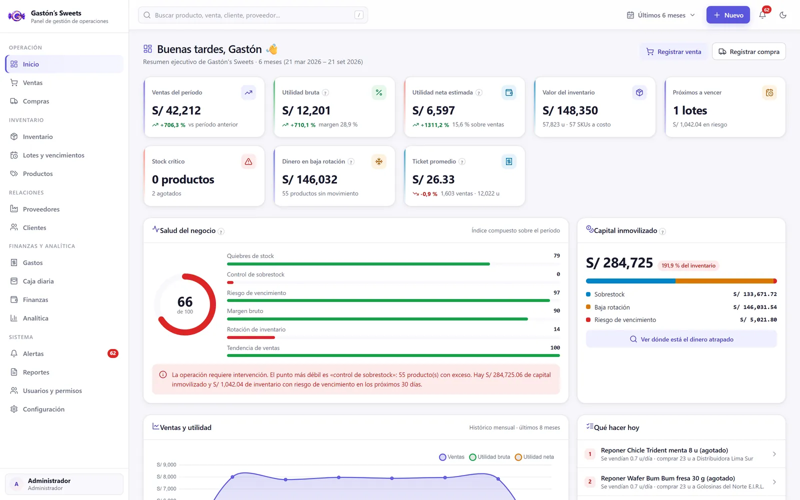
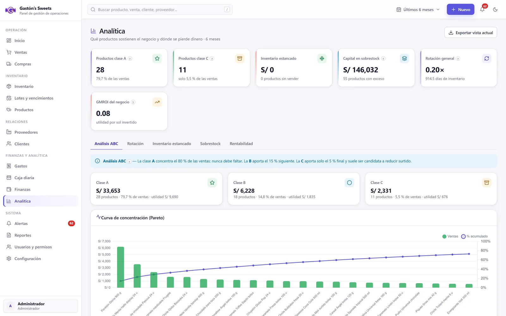
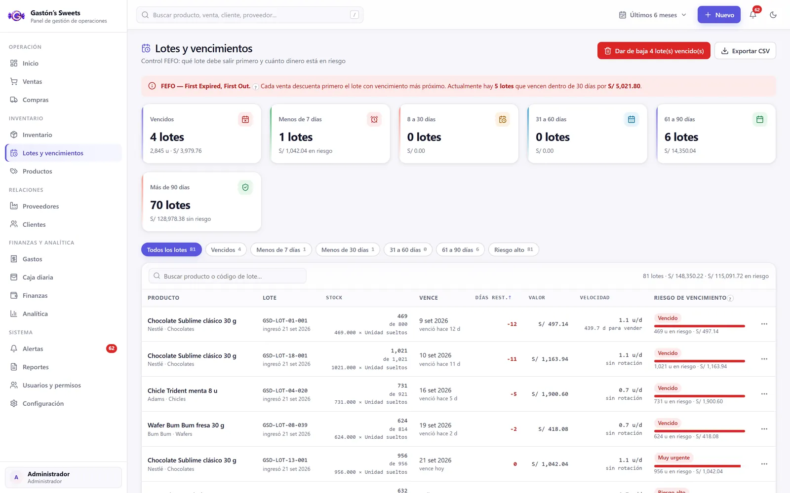
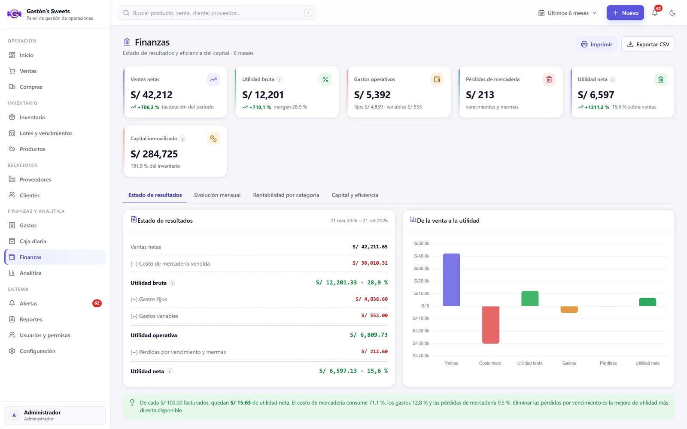
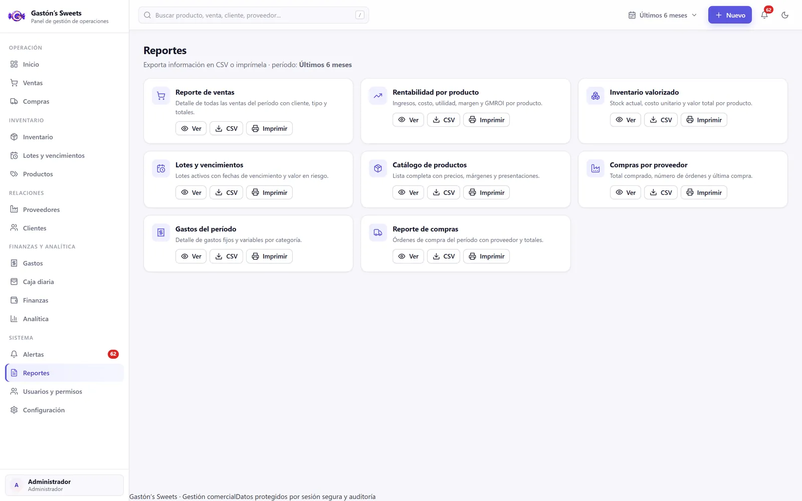
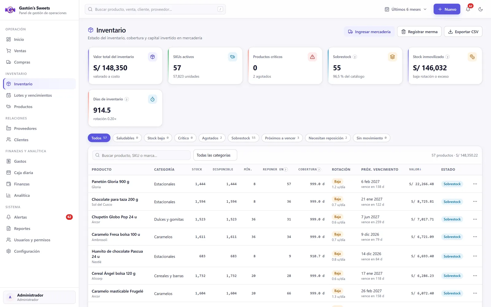
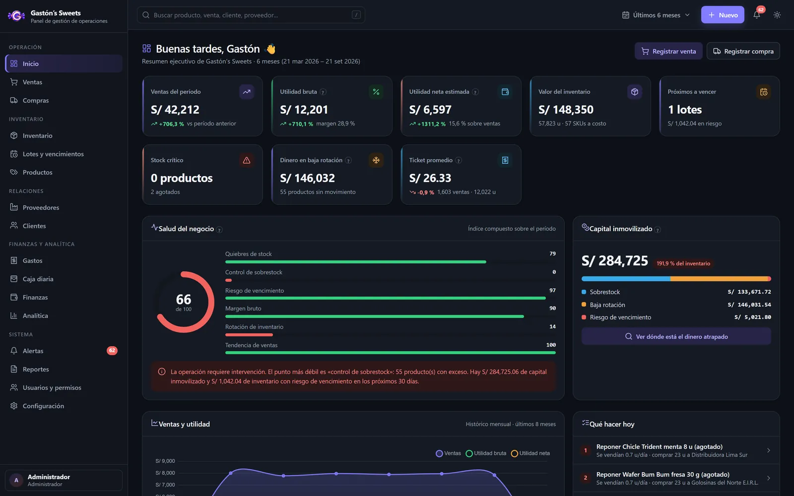

Gastón's Sweets — Commercial Management System
A confectionery business selling perishable stock had no way to know what was about to expire, which credit was overdue, or whether the day actually closed in profit. It ran on spreadsheets.
The problem
Sales, credit, purchasing and perishable stock tracked separately. No expiry control, no traceability, and cash closing done by hand every night.
What I built
A full management platform: sales with credit and payments, purchasing, FEFO inventory with lot and expiry tracking, daily cash, finance, ABC analytics, alerts and reporting.
The result
One auditable system covering purchase-to-cash. The dashboard scores operational health and points to exactly where money is trapped.






